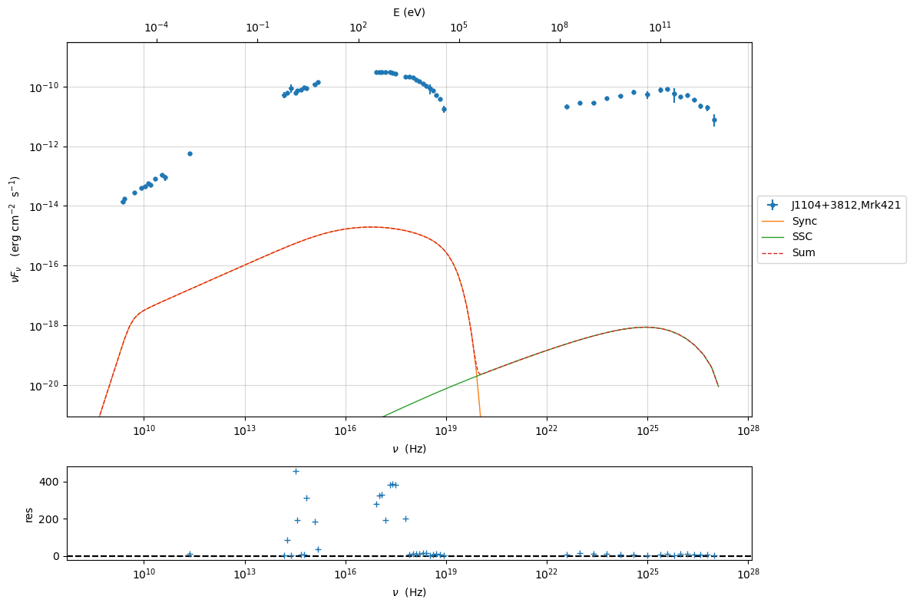
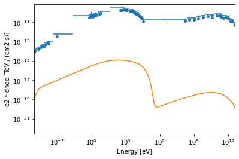

%matplotlib inline
import matplotlib.pyplot as plt
import numpy as np
import astropy.units as u
from astropy.coordinates import SkyCoord, Angle
from regions import CircleSkyRegion
from gammapy.datasets import SpectrumDatasetOnOff, SpectrumDataset, Datasets
from gammapy.makers import SpectrumDatasetMaker
from gammapy.modeling import Fit
from gammapy.modeling.models import (
LogParabolaSpectralModel,
SkyModel,
)
from gammapy.irf import load_cta_irfs
from gammapy.data import Observation, observatory_locations
from gammapy.maps import MapAxis, RegionGeom
# Define simulation parameters parameters
livetime = 1 * u.h
pointing = SkyCoord(0, 0, unit="deg", frame="galactic")
offset = 0.5 * u.deg
# Reconstructed and true energy axis
energy_axis = MapAxis.from_edges(
np.logspace(-0.5, 1.0, 10), unit="TeV", name="energy", interp="log"
)
energy_axis_true = MapAxis.from_edges(
np.logspace(-1.2, 2.0, 31), unit="TeV", name="energy_true", interp="log"
)
on_region_radius = Angle("0.11 deg")
center = pointing.directional_offset_by(
position_angle=0 * u.deg, separation=offset
)
on_region = CircleSkyRegion(center=center, radius=on_region_radius)
# Define spectral model - a simple Power Law in this case
model_simu = LogParabolaSpectralModel(
index=3.0,
amplitude=2.5e-12 * u.Unit("cm-2 s-1 TeV-1"),
reference=1 * u.TeV,
)
print(model_simu)
# we set the sky model used in the dataset
model = SkyModel(spectral_model=model_simu, name="source")
LogParabolaSpectralModel
type name value unit error min max frozen link
-------- --------- ---------- -------------- --------- --- --- ------ ----
spectral amplitude 2.5000e-12 cm-2 s-1 TeV-1 0.000e+00 nan nan False
spectral reference 1.0000e+00 TeV 0.000e+00 nan nan True
spectral alpha 2.0000e+00 0.000e+00 nan nan False
spectral beta 1.0000e+00 0.000e+00 nan nan False
# Load the IRFs
# In this simulation, we use the CTA-1DC irfs shipped with gammapy.
irfs = load_cta_irfs(
"/Users/orion/astro/Programmi/Projects/Active/JetSeT/JetSeT_Test_Coding/code_develpment/v1.2.0/gammapy/gammapy-data/cta-1dc/caldb/data/cta/1dc/bcf/South_z20_50h/irf_file.fits"
)
Invalid unit found in background table! Assuming (s-1 MeV-1 sr-1)
location = observatory_locations['cta_south']
obs = Observation.create(
pointing=pointing, livetime=livetime, irfs=irfs,
)
print(obs)
Observation
obs id : 0
tstart : 51544.00
tstop : 51544.04
duration : 3600.00 s
pointing (icrs) : 266.4 deg, -28.9 deg
deadtime fraction : 0.0%
# Make the SpectrumDataset
geom = RegionGeom.create(region=on_region, axes=[energy_axis])
dataset_empty = SpectrumDataset.create(
geom=geom, energy_axis_true=energy_axis_true, name="obs-0"
)
maker = SpectrumDatasetMaker(selection=["exposure", "edisp", "background"])
dataset_sim = maker.run(dataset_empty, obs)
dataset_sim.models = model
dataset_sim.fake(random_state=42)
print(dataset_sim)
SpectrumDataset
---------------
Name : obs-0
Total counts : 160
Total background counts : 22.29
Total excess counts : 137.71
Predicted counts : 162.84
Predicted background counts : 22.29
Predicted excess counts : 140.55
Exposure min : 2.53e+08 m2 s
Exposure max : 1.77e+10 m2 s
Number of total bins : 9
Number of fit bins : 9
Fit statistic type : cash
Fit statistic value (-2 log(L)) : -706.24
Number of models : 1
Number of parameters : 4
Number of free parameters : 3
Component 0: SkyModel
Name : source
Datasets names : None
Spectral model type : LogParabolaSpectralModel
Spatial model type :
Temporal model type :
Parameters:
amplitude : 2.50e-12 +/- 0.0e+00 1 / (cm2 s TeV)
reference (frozen) : 1.000 TeV
alpha : 2.000 +/- 0.00
beta : 1.000 +/- 0.00
from jetset.jet_model import Jet
from jetset.gammapy_plugin import GammapyJetsetModelFactory
from gammapy.modeling.models import SPECTRAL_MODEL_REGISTRY
jet=Jet(electron_distribution='lppl')
gammapy_jet_model=GammapyJetsetModelFactory(jet)
gammapy_jet_model.parameters.to_table()
Table length=11
| type | name | value | unit | error | min | max | frozen | link |
|---|
| str8 | str16 | float64 | str4 | int64 | float64 | float64 | bool | str1 |
|---|
| spectral | gmin | 2.0000e+00 | | 0.000e+00 | 1.000e+00 | 1.000e+09 | False | |
| spectral | gmax | 1.0000e+06 | | 0.000e+00 | 1.000e+00 | 1.000e+15 | False | |
| spectral | N | 1.0000e+02 | cm-3 | 0.000e+00 | 0.000e+00 | nan | False | |
| spectral | gamma0_log_parab | 1.0000e+04 | | 0.000e+00 | 1.000e+00 | 1.000e+09 | False | |
| spectral | s | 2.0000e+00 | | 0.000e+00 | -1.000e+01 | 1.000e+01 | False | |
| spectral | r | 4.0000e-01 | | 0.000e+00 | -1.500e+01 | 1.500e+01 | False | |
| spectral | R | 5.0000e+15 | cm | 0.000e+00 | 1.000e+03 | 1.000e+30 | False | |
| spectral | R_H | 1.0000e+17 | cm | 0.000e+00 | 0.000e+00 | nan | True | |
| spectral | B | 1.0000e-01 | G | 0.000e+00 | 0.000e+00 | nan | False | |
| spectral | beam_obj | 1.0000e+01 | | 0.000e+00 | 1.000e-04 | nan | False | |
| spectral | z_cosm | 1.0000e-01 | | 0.000e+00 | 0.000e+00 | nan | False | |
from jetset.data_loader import Data,ObsData
from jetset.test_data_helper import test_SEDs
data=Data.from_file(test_SEDs[1])
sed_data=ObsData(data_table=data)
sed_data.group_data(bin_width=0.1)
================================================================================
* binning data *
---> N bins= 179
---> bin_widht= 0.1
================================================================================
/Users/orion/anaconda3/envs/gammapy/lib/python3.9/site-packages/astropy/table/table.py:1407: FutureWarning: Using a non-tuple sequence for multidimensional indexing is deprecated; use arr[tuple(seq)] instead of arr[seq]. In the future this will be interpreted as an array index, arr[np.array(seq)], which will result either in an error or a different result.
newcol = col[slice_]
from gammapy.estimators import FluxPoints
fp=FluxPoints.from_table(sed_data.gammapy_table,sed_type='e2dnde')
No reference model set for FluxMaps. Assuming point source with E^-2 spectrum.
from gammapy.modeling.models import SkyModel
model = SkyModel(name="SSC model Mrk 421", spectral_model=gammapy_jet_model)
gammapy_jet_model.N.value=2
gammapy_jet_model.r.value=0.5
gammapy_jet_model.beam_obj.value=20
print(model)
gammapy_jet_model.evaluate()
p=gammapy_jet_model.jetset_model.plot_model(sed_data=sed_data)
p.add_model_residual_plot(data=sed_data, model=gammapy_jet_model.jetset_model,fit_range=[1E11,1E30])
SkyModel
Name : SSC model Mrk 421
Datasets names : None
Spectral model type : GammapyJetsetModel
Spatial model type :
Temporal model type :
Parameters:
gmin : 2.000 +/- 0.00
gmax : 1000000.000 +/- 0.00
N : 2.000 +/- 0.00 1 / cm3
gamma0_log_parab : 10000.000 +/- 0.00
s : 2.000 +/- 0.00
r : 0.500 +/- 0.00
R : 5000000000000000.000 +/- 0.00 cm
R_H (frozen) : 100000000000000000.000 cm
B : 0.100 +/- 0.00 gauss
beam_obj : 20.000 +/- 0.00
z_cosm : 0.100 +/- 0.00

p=fp.plot(sed_type='e2dnde')
p=gammapy_jet_model.plot(energy_bounds=[1E-18, 10] * u.TeV,energy_power=2)
plt.show()

from gammapy.datasets import FluxPointsDataset,Datasets
dataset_mrk421 = FluxPointsDataset(data=fp,models=model)
# do not use frequency point below 1e11 Hz, affected by non-blazar emission
E_min_fit = (1e11 * u.Hz).to("eV", equivalencies=u.spectral())
dataset_mrk421.mask_fit = dataset_mrk421.data.energy_ref > E_min_fit
dataset_sim.models = model
datasets=Datasets([dataset_mrk421,dataset_sim])
<gammapy.modeling.models.core.DatasetModels at 0x7fdc6479c340>